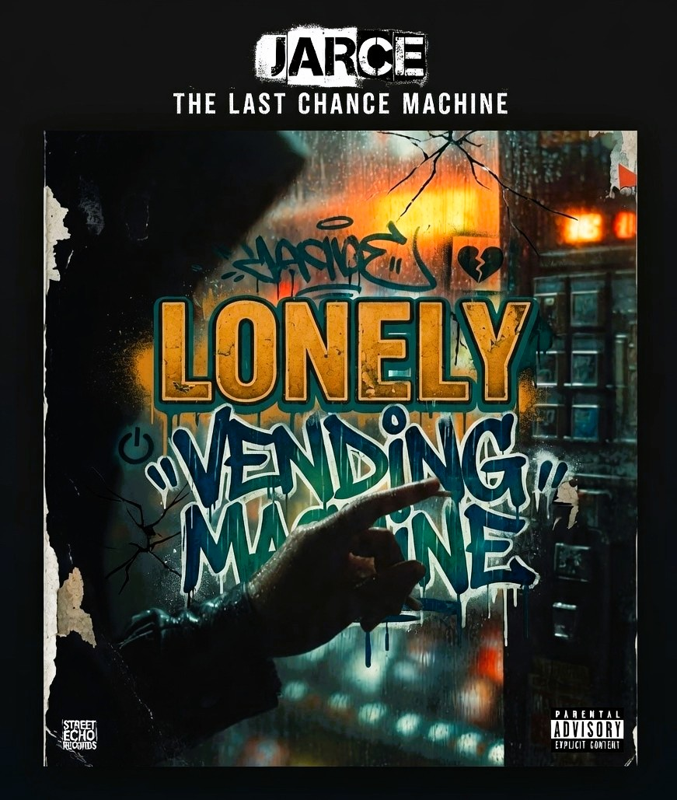

01. LONELY VENDING MACHINE
English · Rock Experimental / Post-punk / Cinematic · JARCE


FIELD TRANSCRIPT / 01
[Verse 1]
You only talked to me
When all the shops were closed
Crinkled bills and tired eyes
Same hoodie
Same low hopes
You'd lean your head
On the scratched-up glass
Mouth the words "last chance"
Then press B5 and laugh
[Chorus]
I'm just a lonely vending machine
Full of your midnight routines
Candy bars and quiet confessions
Half-priced drinks
Full-priced lessons
You never stayed
You just took what you need
Left fingerprints and a trembling key
Still I light up every time that you walk in
Your lonely vending machine
[Verse 2]
You told me you'd move out
"This town's too small for dreams"
I blinked my little numbers
Tried to freeze the scene
You kicked my base
When your card got declined
Said
"Guess that fits
This whole life of mine" (oh-oh)
[Chorus]
I'm just a lonely vending machine
Full of your midnight routines
Candy bars and quiet confessions
Half-priced drinks
Full-priced lessons
You never stayed
You just took what you need
Left fingerprints and a trembling key
Still I light up every time that you walk in
Your lonely vending machine
[Bridge]
They cleaned the hall last week
New paint
Fresh tile
Bright white
I heard you laugh downstairs
Sounded lighter
Sounded right
You passed me by
Didn't even need a drink
But I blinked hello
Till my last bulb winked
[Chorus - Final]
I'm just a lonely vending machine
Ghost of your old sixteens
Empty rows and faded stickers
Quiet now
The clock ticks quicker
You learned to leave
I learned how to wait
Glass full of yesterday's ache
Still I light up in the dark of your memory
Your lonely vending machine (yeah)
Your lonely vending machine